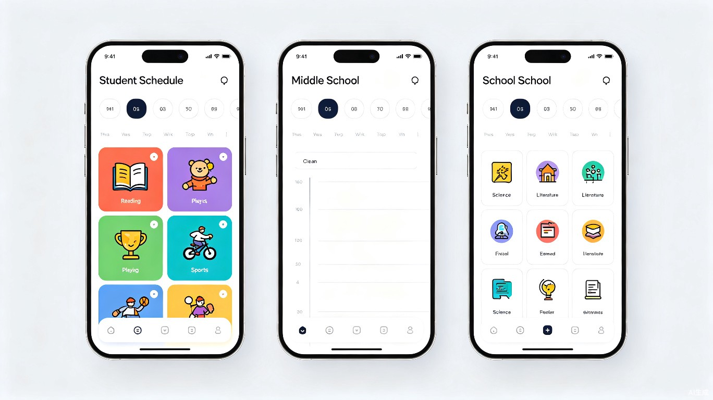

暑假时间管理大师
专为小学生、初中生、高中生打造的智能暑假时间规划工具，让每一天都充实而有节奏
项目背景与需求分析
家长焦虑四大根源
看护困境
双职工白天不在家，老人看护力不从心，托管机构质量参差不齐
作息失控
孩子白天睡到中午、晚上沉迷手机，假期作息彻底混乱
屏幕依赖
独处时间过长，游戏和短视频成为唯一"娱乐"，缺乏多元安排
学业滑坡
两个月"放羊"后，开学成绩下滑是家长最大的恐惧
市面产品不足
目前主流的 Forest专注森林、番茄ToDo、滴答清单等产品面向成人或大学生设计，普遍存在以下问题：
缺少年龄分层
没有针对小学/初中/高中不同阶段的分级引导和时间模板
家长端薄弱
缺乏让家长了解孩子时间分配、学习进度的有效监管机制
学科场景缺失
没有针对不同学科（数学攻坚/英语背词/语文阅读）的差异化计时策略
激励错位
游戏化激励对低龄学生吸引力有限，对高中生又显得幼稚
产品定位与核心价值
三大核心差异化
1. 学段智能适配
根据注册时选择的学段（小学/初中/高中），自动生成匹配年龄特征的时间模板、任务推荐和激励机制。高中生额外选择文/理科方向，获得针对性的学科时间分配方案。
2. 家长可视监管
独立的家长端小程序，实时查看孩子的时间执行情况、完成率和趋势数据。不做"监控型家长"，而是做"了解型家长"——通过数据了解而非指责。
3. 暑假场景深度定制
不是通用时间管理工具的"暑假版皮肤"，而是围绕暑假的核心场景（暑假作业规划、弯道超车、兴趣拓展、社会实践）深度定制的专属工具。
目标用户画像
- 自律能力弱，需要游戏化激励
- 作业量轻，重在习惯养成
- 兴趣广泛但不持久
- 需要家长陪伴和正向反馈
- 每日学习时长建议：1.5-2小时
- 处于"心理断乳期"，渴望自主
- 学科增多，偏科风险出现
- 对游戏化免疫，需要成就感驱动
- 需要平衡学习与社交
- 每日学习时长建议：3-5小时
- 有明确目标感，需要策略指导
- 分科后学科差异大，需针对性规划
- 追求效率和成就感，反感幼稚化设计
- 需要考试节奏训练
- 每日学习时长建议：4-6小时
核心功能架构
flowchart TB
A[暑假时间管理大师] --> B[智能时间规划引擎]
A --> C[分学段任务系统]
A --> D[多端协同机制]
A --> E[激励与成长体系]
B --> B1[AI一键生成暑假计划]
B --> B2[每日智能提醒]
B --> B3[弹性调整建议]
C --> C1[小学生：闯关模式]
C --> C2[初中生：目标驱动模式]
C --> C3[高中生·文科：阅读输出模式]
C --> C4[高中生·理科：攻坚训练模式]
D --> D1[学生端APP]
D --> D2[家长端小程序]
D --> D3[周报推送]
E --> E1[成就勋章系统]
E --> E2[连续打卡奖励]
E --> E3[家庭排行榜]
功能模块详解
模块一：智能时间规划引擎
AI一键生成暑假计划
用户输入暑假起止日期、学段、强项弱项，AI自动生成8周完整暑假规划，包含每日时间表和周度里程碑。
每日智能提醒
根据当前时段自动推送"接下来该做什么"，而非简单闹钟提醒。结合前几天的完成率动态调整难度。
弹性调整建议
当连续3天完成率低于50%时，主动建议降低难度或重新规划；当完成率持续高位时，建议适当增加挑战。
模块二：分学段任务系统（核心差异化）
这是本产品的核心壁垒——不同学段使用完全不同的交互模式和任务体系：
| 维度 | 小学生 | 初中生 | 高中生·文科 | 高中生·理科 |
|---|---|---|---|---|
| 交互模式 | 闯关游戏模式 | 目标驱动模式 | 阅读输出模式 | 攻坚训练模式 |
| 任务类型 | 暑假作业/阅读/运动/手工/家务 | 学科巩固/预习/社会实践/阅读 | 素材积累/论述练习/时政阅读/写作 | 限时训练/错题攻克/公式推导/实验探究 |
| 计时策略 | 短时段（15-25分钟）+休息动画 | 番茄钟（25分钟）+弹性休息 | 深度阅读块（45分钟）+笔记整理 | 高强度专注（50分钟）+限时测评 |
| 激励机制 | 星星收集/角色升级/虚拟宠物 | 成就勋章/连续打卡/自我挑战 | 知识图谱成长/素材库积累 | 正确率曲线/薄弱点攻破记录 |
| 家长角色 | 主导规划 + 陪伴执行 | 适度监督 + 定期复盘 | 策略顾问 + 数据观察 | 策略顾问 + 数据观察 |
模块三：多端协同机制
学生端APP
主操作界面，任务执行、计时、打卡、数据展示一体化
家长端小程序
微信小程序，无需安装，查看周报、趋势图和异常提醒
周报推送
每周日自动生成暑假周报，包含完成率、学科分布、进步趋势
各学段暑假时间分配方案
小学生：三三制时间管理法
小学生每日学习总时长控制在1.5-2小时，以"闯关"形式包装暑假作业。每完成一组任务可解锁小游戏时间（兑换机制），运动和户外活动不低于2小时。
初中生：3:3:4原则
初中生每日学习3-5小时，采用"目标驱动"模式——每周设定可量化的学习目标（如"完成数学第三章复习"），通过完成率展示而非强制提醒来驱动执行。上午安排数学/物理等深度思考科目，下午安排英语/语文记忆积累。
高中生·文科方向
文科生每日学习5-5.5小时，侧重"阅读输出模式"。上午集中记忆（历史事件/政治概念/古诗文），下午进行材料分析/论述题/写作训练。每日课外阅读不少于1小时，软件内置"素材积累"功能，自动归类可用素材。
高中生·理科方向
理科生每日学习5.5-6小时，侧重"攻坚训练模式"。上午高强度攻坚（数学/物理难题），下午限时训练（培养考试节奏）。内置"错题管理"模块，标注错误类型（概念/步骤/计算），每周自动推送重做。
每日时间规划详表
小学生每日时间规划表
| 时段 | 学霸预习轨道 | 基础巩固轨道 |
|---|---|---|
| 07:00 - 07:30 起床洗漱+早餐 |
晨间准备 | |
| 07:30 - 08:00 晨读时间 |
预习下学期生字词 / 英语单词跟读 | 上学期生字词听写 / 英语单词复习 |
| 08:30 - 09:15 上午学习一 |
数学：下学期重点单元预习 | 数学：上学期错题重做+计算专项 |
| 09:15 - 09:30 休息+眼保健操 |
休息放松 | |
| 09:30 - 10:15 上午学习二 |
语文：下学期课文预读+看图写话 | 语文：阅读理解专项+日记练习 |
| 10:30 - 12:00 户外运动 |
跳绳/跑步/球类运动（不低于1.5小时） | |
| 12:00 - 14:00 午餐+午休 |
午餐 + 午休（建议30-40分钟） | |
| 14:30 - 15:30 兴趣拓展 |
科普读物 / 书法练习 / 数学思维游戏 | 暑假作业完成 / 手工制作 / 绘画 |
| 15:30 - 16:30 阅读时间 |
课外自主阅读（中文或英文绘本，不少于30分钟） | |
| 16:30 - 18:00 户外/家务 |
户外自由活动 / 帮做家务 / 和小伙伴玩耍 | |
| 18:00 - 20:00 晚餐+家庭时间 |
晚餐 + 亲子聊天 / 家庭游戏 | |
| 20:00 - 20:30 成果验收 |
当日小测验（5-10分钟）+ 打卡确认 | |
| 20:30 - 21:00 自由支配 |
完成学习任务兑换的自由时间（游戏/动画/兴趣） | |
| 21:00 就寝 |
洗漱 + 睡前故事/阅读 → 21:30熄灯 | |
初中生每日时间规划表
| 时段 | 学霸预习轨道 | 基础巩固轨道 |
|---|---|---|
| 07:00 - 07:30 起床洗漱+早餐 |
晨间准备 | |
| 07:30 - 08:00 晨读时间 |
英语下学期词汇预习 / 英文报刊选读 | 英语上学期语法复习 / 词汇系统梳理 |
| 08:30 - 09:30 上午深度学习一 |
数学：下学期新章节预习+压轴题突破 | 数学：薄弱章节重学+几何证明训练 |
| 09:30 - 09:45 休息 |
休息+远眺 | |
| 09:45 - 10:45 上午深度学习二 |
物理：新概念预习+实验原理了解 | 物理：力学/电学基础巩固+公式推导 |
| 11:00 - 12:00 上午学习三 |
语文：文言文预读 / 名著提前阅读 | 语文：古诗文默写 / 阅读理解技巧 |
| 12:00 - 14:00 午餐+午休 |
午餐 + 午休（建议30-40分钟） | |
| 14:30 - 15:30 下午学习一 |
化学：方程式提前识记（初三） | 化学：实验现象回顾+计算基础（初三） |
| 15:30 - 16:30 下午学习二 |
英语：长难句分析+写作练习 | 英语：听力强化+阅读理解训练 |
| 16:30 - 18:00 运动+自由 |
篮球/游泳/跑步等运动（不少于45分钟） | |
| 18:00 - 19:30 晚餐+休息 |
晚餐 + 适当放松 | |
| 19:30 - 20:30 拓展/阅读 |
拓展阅读 / 社会实践准备 / 兴趣项目 | 暑假作业 / 课外阅读 / 作文素材积累 |
| 20:30 - 21:00 成果验收 |
当日小测验 + 错题整理 + 打卡确认 | |
| 21:00 - 22:00 自由支配 |
自由活动（需遵守电子产品使用协议） | |
| 22:00 就寝 |
洗漱 → 22:30熄灯（保证8.5小时睡眠） | |
高中生·文科方向 每日时间规划表
| 时段 | 学霸预习轨道 | 基础巩固轨道 |
|---|---|---|
| 06:30 - 07:00 起床洗漱 |
晨间准备 | |
| 07:00 - 07:45 晨读 |
英语下学期词汇预习 / 古诗文新篇 | 英语词汇查漏 / 古诗文默写过关 |
| 08:00 - 09:00 上午攻坚一 |
数学：下学期新课预习（导数/圆锥曲线） | 数学：上学期错题清零+薄弱专题突破 |
| 09:00 - 09:15 休息 |
休息+远眺 | |
| 09:15 - 10:15 上午攻坚二 |
历史：新阶段历史线索梳理+史料研读 | 历史：时间轴重理+高频考点反复练 |
| 10:30 - 11:30 上午攻坚三 |
政治：新模块概念预学+逻辑框架搭建 | 政治：答题模板整理+时政材料分析 |
| 11:30 - 14:00 午餐+午休 |
午餐 + 午休（40-50分钟） | |
| 14:00 - 15:00 下午输出一 |
语文：高阶写作手法训练+文学评论 | 语文：文言文逐篇过关+作文升格训练 |
| 15:00 - 16:00 下午输出二 |
地理：新原理预习+图表分析训练 | 地理：图表分析强化+区域地理梳理 |
| 16:00 - 17:00 英语/综合 |
英语：高阶阅读理解+写作训练 | 英语：语法梳理+阅读理解提速训练 |
| 17:00 - 18:00 运动 |
跑步/羽毛球/游泳（不少于45分钟） | |
| 18:00 - 19:30 晚餐+休息 |
晚餐 + 适当放松 | |
| 19:30 - 20:30 课外阅读 |
时政新闻+历史纪录片+课外书籍 | 时政素材积累+课外书籍+答题素材归类 |
| 20:30 - 21:00 成果验收 |
当日小测验+素材归类+错题整理+打卡 | |
| 21:00 - 22:00 自由支配 |
自由活动（需遵守电子产品使用协议） | |
| 22:00 就寝 |
洗漱 → 22:30熄灯（保证8小时睡眠） | |
高中生·理科方向 每日时间规划表
| 时段 | 学霸预习轨道 | 基础巩固轨道 |
|---|---|---|
| 06:30 - 07:00 起床洗漱 |
晨间准备 | |
| 07:00 - 07:45 晨读 |
英语下学期词汇预习 / 语文素材积累 | 英语词汇语法巩固 / 语文基础过关 |
| 08:00 - 09:30 上午攻坚一 |
数学：下学期新课预习+竞赛思维拓展 | 数学：知识体系重建+薄弱章节重点攻克 |
| 09:30 - 09:45 休息 |
休息+远眺 | |
| 09:45 - 11:15 上午攻坚二 |
物理：新章节概念预习+物理模型建立 | 物理：公式定律系统复习+易错题型反复练 |
| 11:15 - 12:00 上午攻坚三 |
化学：有机化学预学+反应机理理解 | 化学：元素化合物知识网构建+方程式过关 |
| 12:00 - 14:00 午餐+午休 |
午餐 + 午休（40-50分钟） | |
| 14:00 - 15:00 限时训练一 |
数学限时训练（培养做题速度和准确率） | 数学典型题型集中训练+限时练习 |
| 15:00 - 16:00 限时训练二 |
物理/化学限时训练+实验设计练习 | 物理/化学计算题专项+限时测评 |
| 16:00 - 17:00 综合/生物 |
生物遗传学预习 / 错题复盘 | 生物课本通读+核心概念过关 / 错题复盘 |
| 17:00 - 18:00 运动 |
跑步/篮球/游泳（不少于45分钟） | |
| 18:00 - 19:30 晚餐+休息 |
晚餐 + 适当放松 | |
| 19:30 - 20:30 语文/英语 |
英语科技文献选读 / 语文素材积累 | 语文基础过关 / 英语阅读理解提速 |
| 20:30 - 21:15 成果验收 |
当日小测验+错题整理+漏洞标注+打卡确认 | |
| 21:15 - 22:00 自由支配 |
自由活动（需遵守电子产品使用协议） | |
| 22:00 就寝 |
洗漱 → 22:30熄灯（保证8小时睡眠） | |
以上时间表为标准模板，用户注册后系统会根据实际情况（起床时间、午休习惯、地区时差）自动微调。用户也可手动调整各时段的顺序和时长，但每日总学习时长上下浮动不超过20%，确保规划的科学性。周末安排可适当放宽学习强度，增加社会实践和家庭活动。
课程体系与学习任务规划
双轨制任务体系说明
学霸预习轨道
面向成绩优秀、学有余力的学生。核心任务是对下学期新课程进行系统预习，提前建立知识框架，开学后可直接进入深度学习和拓展训练阶段。
适合人群：班级前30% / 单科成绩90分以上 / 自律能力强
基础巩固轨道
面向成绩中等或偏弱的学生。核心任务是系统复习上学期旧课程，查漏补缺，巩固基础知识和核心考点，确保不留知识死角。
适合人群：班级中等及以下 / 存在明显弱科 / 基础知识不牢固
小学生课程规划
| 轨道 | 语文 | 数学 | 英语 | 综合素养 |
|---|---|---|---|---|
| 学霸预习 | 下学期课文预读 / 生字词提前掌握 / 看图写话训练 | 下学期重点单元预习 / 思维训练拓展 / 数学思维游戏 | 下学期单词预习 / 简单对话跟读 / 英文绘本阅读 | 科普读物 / 古诗词拓展 / 书法练习 |
| 基础巩固 | 上学期生字词听写 / 阅读理解专项 / 日记写作练习 | 上学期错题重做 / 计算专项训练 / 应用题分步解析 | 上学期单词复习 / 自然拼读巩固 / 简单听力训练 | 暑假作业系统完成 / 课外阅读打卡 |
初中生课程规划
| 轨道 | 语文 | 数学 | 英语 | 物理/化学 |
|---|---|---|---|---|
| 学霸预习 | 下学期文言文预读 / 议论文结构学习 / 名著提前阅读 | 下学期新章节预习 / 压轴题专项突破 / 数学建模初探 | 下学期词汇预习 / 长难句分析入门 / 英文报刊选读 | 物理新概念预习 / 实验原理了解 / 化学方程式提前识记（初三） |
| 基础巩固 | 上学期古诗文默写 / 阅读理解技巧 / 作文素材积累 | 上学期薄弱章节重学 / 分式方程/函数专项 / 几何证明训练 | 上学期语法专项复习 / 词汇系统梳理 / 听力强化训练 | 力学/电学基础巩固 / 公式推导过关 / 化学实验现象回顾（初三） |
高中生·文科方向课程规划
| 轨道 | 语文 | 数学 | 英语 | 历史 / 政治 / 地理 |
|---|---|---|---|---|
| 学霸预习 | 下学期篇目精读 / 高阶写作手法 / 文学评论入门 | 下学期新课预习（导数/圆锥曲线等） / 数学建模 | 下学期词汇预习 / 高阶阅读理解 / 英文写作训练 | 新阶段历史线索梳理 / 政治新模块概念预学 / 地理原理提前理解 |
| 基础巩固 | 文言文逐篇过关 / 古诗文默写 / 作文升格训练 | 上学期错题清零 / 基础题型反复练 / 薄弱专题突破 | 语法系统梳理 / 词汇查漏补缺 / 阅读理解提速 | 历史时间轴重理 / 政治答题模板整理 / 地理图表分析训练 |
高中生·理科方向课程规划
| 轨道 | 数学 | 物理 | 化学 | 生物 / 语文 / 英语 |
|---|---|---|---|---|
| 学霸预习 | 下学期新课预习 / 竞赛思维拓展 / 压轴题专项 | 新章节概念预习 / 物理模型建立 / 实验设计训练 | 有机化学预学 / 反应机理理解 / 实验方案设计 | 生物遗传学预习 / 语文素材积累 / 英语科技文献选读 |
| 基础巩固 | 上学期知识体系重建 / 薄弱章节重点攻克 / 典型题型训练 | 上学期公式定律系统复习 / 易错题型反复练 / 力学电学基础强化 | 元素化合物知识网构建 / 方程式默写过关 / 计算题专项 | 生物课本通读 / 语文基础过关 / 英语词汇语法巩固 |
成果验收与查漏补缺体系
成果验收机制
每日小测
每天学习结束后5-10分钟快速测验，检测当日知识点掌握情况。题目由AI根据当天学习内容自动生成。
周度验收
每周日生成"周度验收报告"，包含本周完成率、知识点掌握热力图、正确率趋势和进步排名。
阶段大测
每两周进行一次阶段综合测试，模拟真实考试环境限时完成，全面检验本阶段学习成果。
暑假总评
暑假结束前生成"暑假学习总评报告"：知识点掌握全景图、各科成长曲线、薄弱点清单和开学建议。
智能查漏补缺
知识漏洞雷达图
通过每日小测和周度验收的数据积累，系统自动生成各科"知识漏洞雷达图"，直观展示哪些知识点已掌握、哪些存在漏洞、哪些完全空白。不同颜色标记掌握程度：
● 已掌握 ● 部分掌握 ● 存在漏洞
智能补缺推送
系统根据漏洞雷达图自动推送"补缺任务"——精准推荐相关知识点讲解视频、练习题组和错题回顾。补缺任务优先级高于正常学习任务，确保漏洞在暑假期间被系统修复。
错题本自动管理
所有测试中的错题自动归入电子错题本，按学科-章节-错误类型三级分类。支持手动标注"已理解/需重做"，系统每周自动推送"错题重做清单"。理科生特别适用——公式推导、计算步骤、概念混淆均可精准定位。
名师在线辅导体系
辅导模式
AI智能答疑（免费）
针对日常学习中的基础问题，AI助手7x24小时在线解答。拍照上传题目即可获得解题思路（非直接给答案），引导学生自主思考。支持数学公式识别、英语语法纠错、古诗文翻译等。
名师直播课（会员）
每周安排2-3场名师直播课，按学段和轨道分班。学霸轨道侧重"新知识精讲与拓展"，基础巩固轨道侧重"旧知识串讲与方法总结"。支持回放，错过可随时补看。
1对1名师辅导（付费）
针对查漏补缺中发现的顽固薄弱点，可预约1对1名师视频辅导。每次30分钟，名师在课前会收到学生的"漏洞诊断报告"和"错题清单"，确保辅导精准高效。按次付费，单次¥49-99。
名师团队配置
| 学段 | 语文 | 数学 | 英语 | 理科综合 | 文科综合 |
|---|---|---|---|---|---|
| 小学 | 2名 | 2名 | 1名 | — | — |
| 初中 | 2名 | 2名 | 2名 | 2名（物理+化学） | — |
| 高中·文科 | 2名 | 2名 | 2名 | — | 3名（历史+政治+地理） |
| 高中·理科 | 1名 | 3名 | 1名 | 3名（物理+化学+生物） | — |
所有名师须满足以下条件：5年以上教龄、所教学科中考/高考成绩优异、有在线教育经验。入职前需通过3轮试讲评审（教学设计/课堂表现/学生互动），每季度根据学生反馈和效果数据动态淘汰与补充。
暑假8周规划节奏
将整个暑假分为四个阶段，每个阶段有不同的目标和节奏，避免"一口气跑到终点"的疲劳感。
| 阶段 | 时间 | 关键词 | 核心任务 | 学习强度 |
|---|---|---|---|---|
| 适应期 | 第1-2周 | 调整节奏 | 制定计划、建立作息、完成暑假作业的10% | ⭐⭐ 轻松 |
| 攻坚期 | 第3-5周 | 弯道超车 | 弱科重点突破、预习下学期核心章节、限时训练 | ⭐⭐⭐⭐ 高强度 |
| 拓展期 | 第6-7周 | 全面提升 | 社会实践、兴趣项目、阅读拓展、弱科收尾 | ⭐⭐⭐ 适中 |
| 收心期 | 第8周 | 回归状态 | 暑假作业收尾、作息调整回学校模式、预习收尾 | ⭐⭐⭐ 适中 |
产品界面概念展示

关键界面设计原则
小学生端
大面积色块、圆角卡片、可爱图标，任务以"关卡"形式呈现。完成一关有动画特效和星星奖励，简单直观、零学习成本。
初中生端
简约现代设计，以"目标看板"为核心视图。展示本周目标、已完成任务和待办事项，数据可视化突出个人成长。
高中生端
信息密度适中，专业高效风格。分文理科后界面自动切换：文科突出"素材库"和"论述练习"，理科突出"限时训练"和"错题分析"。
商业模式建议
| 版本 | 价格 | 核心功能 | 目标用户 |
|---|---|---|---|
| 免费版 | 免费 | 基础时间模板 / 每日打卡 / 1条轨道 / AI基础答疑 / 周报简版 | 体验用户 |
| 暑假特惠版 | ¥59/暑假 | 双轨道切换 / 成果验收全功能 / 查漏补缺 / 错题本 / 家长端完整周报 / 名师直播课 | 核心用户 |
| 精品辅导版 | ¥199/暑假 | 暑假特惠全部功能 + 4次1对1名师辅导 + 专属学习顾问 + 定制学习方案 | 高需求家庭 |
| 年度会员 | ¥399/年 | 寒暑假+日常学期全覆盖 / 12次1对1辅导 / 学科分析月报 / 专属顾问 | 留存用户 |
通过家长社群（微信群/小红书）进行口碑传播，核心卖点是"看得见的暑假进步"——每周生成的可视化周报天然具备分享属性。可联合教育KOL推广，定位为"不是补课工具，而是让暑假不虚度的生活管理助手"。
总结与下一步
暑假时间管理大师瞄准的是一个真实且急迫的家长痛点——超长暑假中孩子的时间管理和学业维持。与市面通用时间管理工具不同，本产品围绕"学段适配"和"暑假场景"两大核心差异化构建竞争壁垒。
关键成功因素：
学段适配做到极致
不同学段不仅是"时间模板不同"，而是交互逻辑、激励机制、任务体系的全面差异
家长端体验顺畅
小程序零门槛，数据展示清晰直观，成为家长的"定心丸"而非"监控器"
周报具备传播力
自动生成的暑假周报是天然的社交货币，驱动口碑传播
符合政策导向
引导全面发展、理性规划，与教育部"还假于学生"方向一致[3]